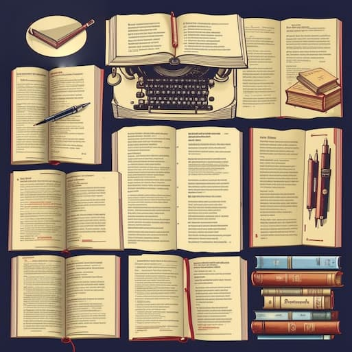

Написание книги — это сложный, но увлекательный процесс, который включает в себя несколько ключевых этапов. Каждый из них требует внимательного подхода и тщательной подготовки. Вот основные шаги, которые помогут вам организовать технический процесс написания книги.
Перед тем как начать писать, важно определить жанр вашей книги и целевую аудиторию. Это поможет вам сосредоточиться на том, какие темы и стили будут наиболее привлекательны для ваших читателей. Жанр может варьироваться от художественной литературы до научной, от фантастики до нон-фикшн.
После определения жанра стоит разработать структуру книги. Это может быть подробный план глав, который поможет вам лучше понять, как будет развиваться сюжет или тема. Структура может включать в себя:
Создание расписания — ключевой момент для успешного написания книги. Установите для себя четкие сроки для завершения каждой главы или части. Это поможет вам оставаться на курсе и не откладывать работу на потом. Можно использовать метод «Помидора», устанавливая таймер на 25 минут работы, после которых следует 5 минут перерыва.
Теперь пришло время писать черновик. Не беспокойтесь о качестве на этом этапе; главное — это записать свои идеи и мысли. Пишите, не останавливаясь, позволяя идеям течь. Не бойтесь вносить изменения — это всего лишь черновик, и его можно редактировать позже.
После завершения черновика начните редактуру. Это критически важный этап, на котором вы будете пересматривать текст, исправлять ошибки и улучшать стиль. Рекомендуется:
Получение обратной связи от бета-ридеров или профессиональных редакторов может оказаться очень полезным. Они могут указать на слабые места в сюжете или предложить улучшения. Будьте открыты к критике и используйте её для улучшения вашей работы.
После окончательной редакции вам нужно будет подготовить книгу к публикации. Это включает в себя выбор формата (печатный или электронный), дизайн обложки и верстку. Если вы планируете отправлять книгу в издательство, следует подготовить синопсис и предложение для агента или редактора.
Как только ваша книга будет опубликована, начните работать над её продвижением. Создайте стратегию маркетинга: используйте социальные сети, блоги, презентации и другие платформы для привлечения читателей. Организация мероприятий, таких как автограф-сессии или онлайн-вебинары, также поможет привлечь внимание к вашему произведению.
Следуя этим шагам, вы сможете организовать технический процесс написания книги и успешно завершить своё литературное произведение. Помните, что ключ к успеху — это планирование, дисциплина и готовность к саморазвитию